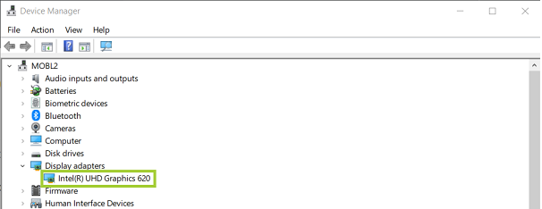

Environment
Operating System
Windows 11*, Windows® 10 family
How to Identify Your Intel® Integrated Graphics in Windows® 10 and Windows 11*
Content Type: Identify My Product | Article ID: 000005510 | Last Reviewed: 02/05/2025
Use the instructions below to identify the Intel integrated graphics product in your computer before installing a graphics driver in Windows 10 or Windows 11.
Method 1: Manual identification
- Open Device Manager by pressing the Windows and X keys on your keyboard. Select Device Manager to open it.
- Click Yes when prompted for permission from User Account Control.
- Click Display adapters to expand it.
- Note the Intel graphics entry listed.
Example 1:

- If an Intel Graphics adapter is not shown in the Device Manager, see Intel Graphics adapter doesn't appear in the Device Manage
- If you see the adapter listed as a Microsoft Basic Display Adapter or Standard VGA adapter, then Windows is working with pre-loaded generic and basic video drivers. Check with your computer manufacturer to determine your computer's graphics controller so the proper driver can be installed.
- If you see the adapter listed only as Intel® HD Graphics or
Intel® UHD Graphics without any numerical identifier, or if
you cannot identify your adapter using either of the methods
detailed here, follow these steps:
- Refer to How to Identify My Intel® Processor to identify your processor.
- Visit our Product Specification Page (ARK) and manually search for your processor for a more detailed list of its specifications.
Method 2: Use the Intel® Driver & Support Assistant to detect your graphics controller automatically
Download the Intel® Driver & Support Assistant. For more information, see the Intel® Driver & Support Assistant FAQ.
- Run the Intel® Driver & Support Assistant.
- Under Devices and Drivers, expand the Intel Graphics entry.
- Note the Intel Graphics entry presented.
- If you see the adapter listed as Microsoft Basic Display Adapter or Standard VGA adapter, then Windows is working with pre-loaded generic and basic video drivers. Check with your computer manufacturer to determine your computer's graphics controller so the proper driver can be installed.
- If you see the adapter listed only as Intel® HD Graphics or
Intel® UHD Graphics without any numerical identifier, or if
you cannot identify your adapter using either of the methods
detailed here, follow these steps:
- Refer to How to Identify My Intel® Processor to identify your processor.
- Visit our Product Specification Page (ARK) and manually search for your processor for a more detailed list of its specifications.
Alternative:
For any of the Intel Arc A-Series Discrete Graphics Cards, either mobile or desktop, and Intel Core Ultra Processor Family, download the Intel® Arc™ & Iris® Xe Graphics Driver
To identify your Intel graphics driver version, see What's My Intel® Graphics Driver Version?
Once you have identified your Intel graphics product, see how to install the latest drivers on Windows® 10 and 11*.
For older Windows versions, see the following: